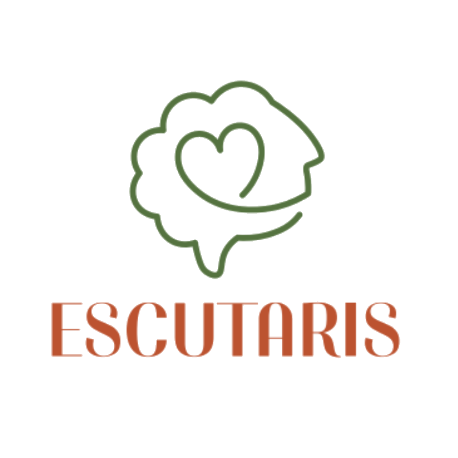
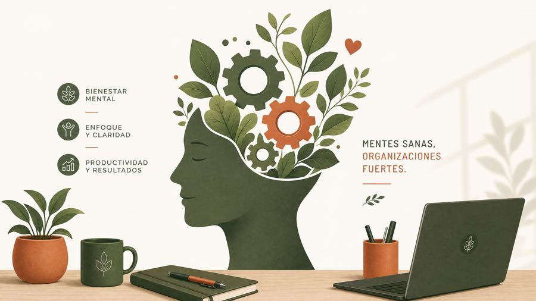
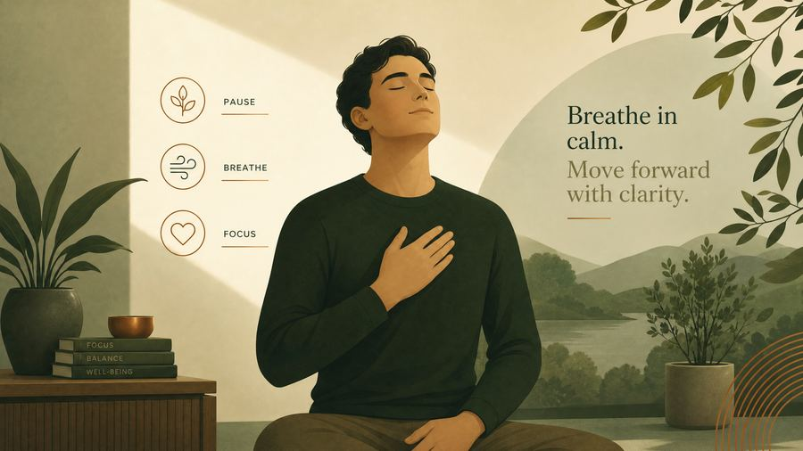
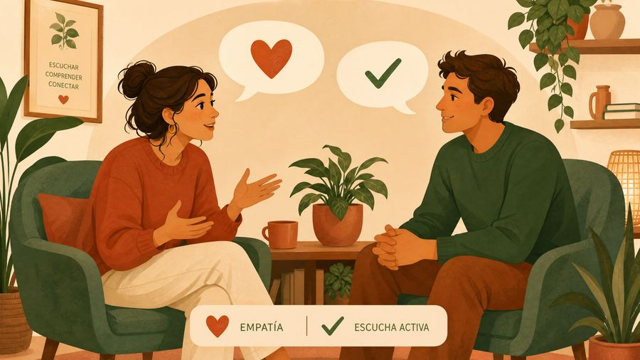
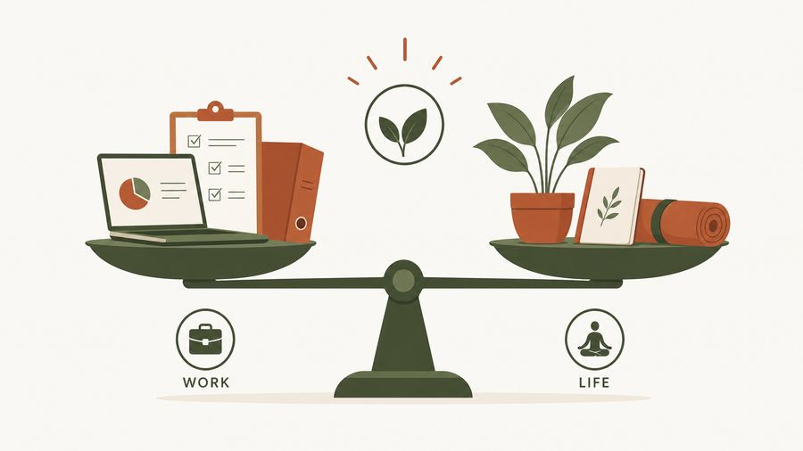
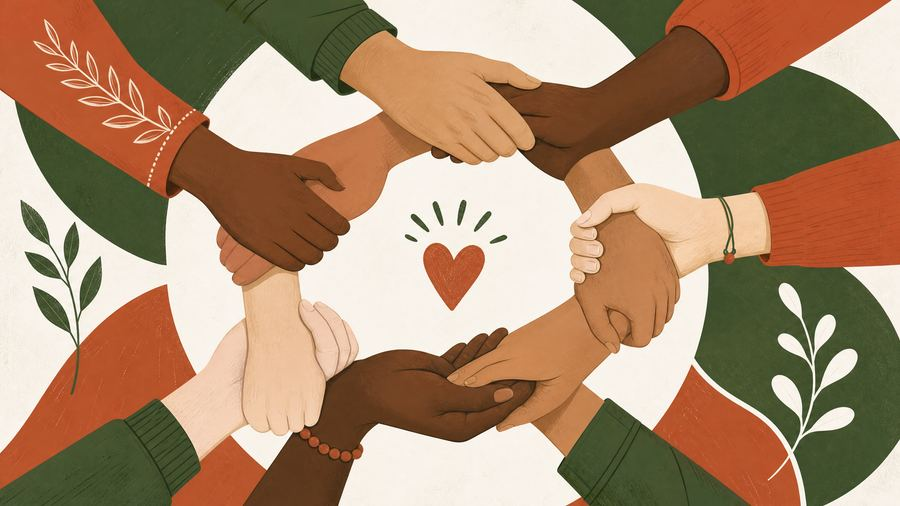
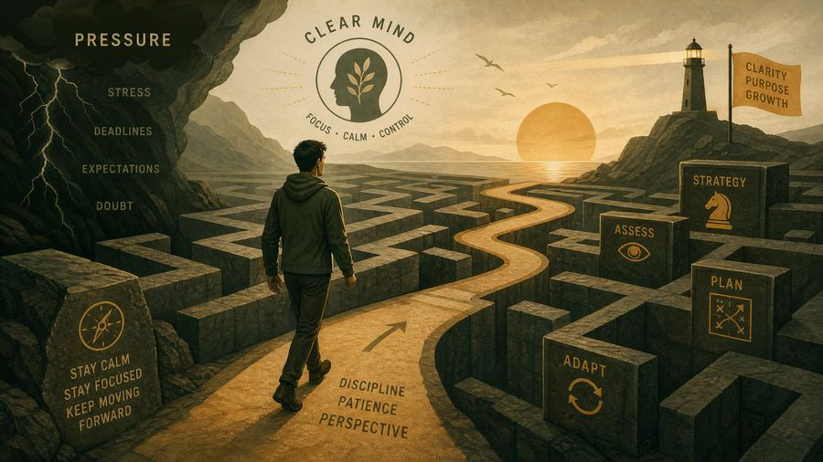
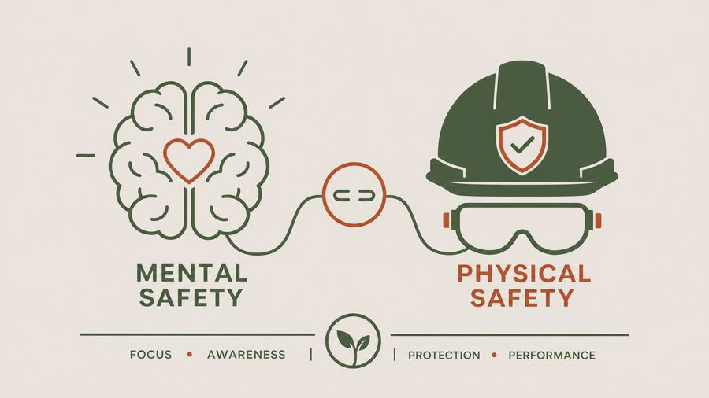
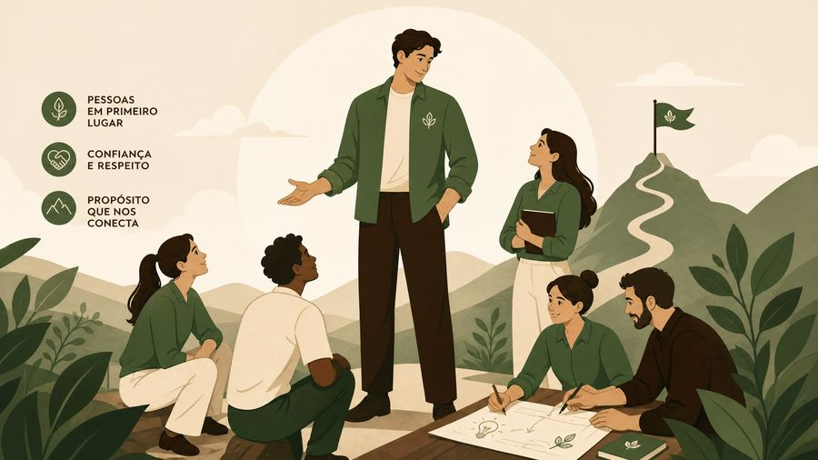
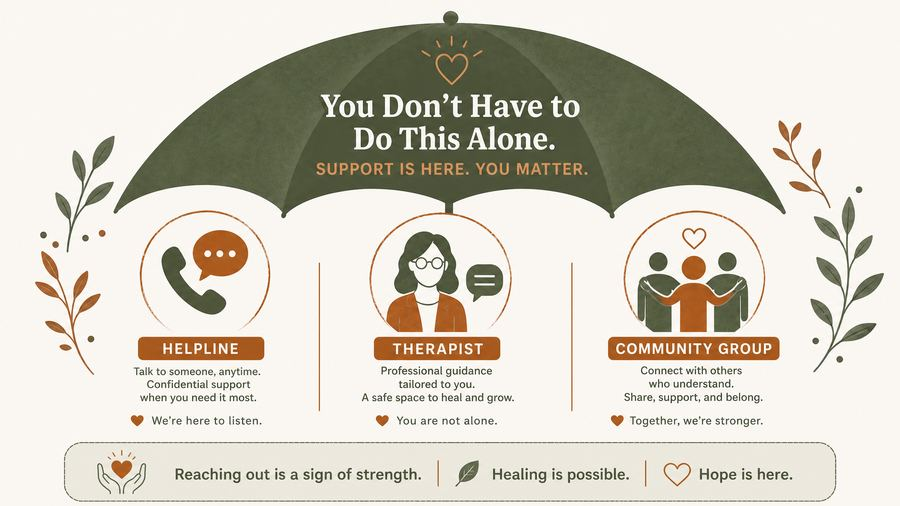

12 Diálogos Semanais sobre Saúde Mental e Segurança
Roteiros de 5 minutos para líderes e SESMT utilizarem com equipes operacionais, promovendo um ambiente de trabalho mais saudável e seguro.
Bem-vindo ao Kit DDS Escutaris, uma coleção de 12 roteiros de Diálogos Diários de Segurança (DDS) especialmente desenvolvidos para líderes e membros do SESMT que desejam promover a saúde mental e a segurança no ambiente corporativo.
Cada roteiro foi cuidadosamente elaborado para ser executado em aproximadamente 5 minutos, oferecendo uma abordagem prática, acessível e alinhada com a missão da Escutaris: democratizar o acesso qualificado a diagnósticos de saúde mental no trabalho e fatores psicossociais, promovendo ambientes de trabalho mais seguros e saudáveis.
Fortalecer a cultura de saúde mental nas organizações, capacitando líderes e profissionais de segurança a conduzirem conversas significativas e educativas com suas equipes operacionais, criando um ambiente psicologicamente seguro onde o bem-estar é valorizado como componente essencial da segurança.
1. Escolha o Tema: Selecione o DDS que melhor se adequa ao momento ou à necessidade da sua equipe.
2. Prepare-se: Leia o roteiro com antecedência para se familiarizar com o conteúdo e as perguntas de reflexão.
3. Crie um Espaço Seguro: Reserve um tempo livre de interrupções, reúna a equipe em um local confortável e estabeleça um tom acolhedor.
4. Conduza com Autenticidade: Use o roteiro como guia, mas sinta-se à vontade para adaptar exemplos e perguntas à realidade da sua equipe.
5. Incentive a Participação: Abra espaço para perguntas, comentários e reflexões. O diálogo é mais valioso que a transmissão de informações.
6. Acompanhe: Observe se há necessidade de suporte adicional para algum membro da equipe e oriente sobre os recursos disponíveis.
Ao final deste DDS, os participantes serão capazes de compreender que saúde mental vai além da ausência de doenças, reconhecendo sua importância para o desempenho profissional e a segurança no ambiente de trabalho.

Bom dia a todos! Hoje vamos conversar sobre um tema fundamental para o nosso bem-estar e para a segurança de todos: a saúde mental no trabalho. Muitas vezes, quando falamos em saúde, pensamos logo na saúde física, não é? Mas a saúde mental é igualmente importante e está diretamente ligada à nossa capacidade de realizar as tarefas diárias, de nos relacionarmos com os colegas e, claro, de trabalhar com segurança.
Vamos desmistificar um pouco o que é saúde mental. Não se trata apenas de não ter uma doença como depressão ou ansiedade. Saúde mental é um estado de bem-estar onde a pessoa consegue usar suas próprias habilidades, lidar com o estresse normal da vida, trabalhar de forma produtiva e contribuir para a comunidade. No nosso dia a dia, isso significa:
Pensem em um dia em que vocês estavam muito preocupados ou cansados. Como isso afetou a concentração de vocês? E a segurança? (Pausa para breve reflexão ou uma pergunta rápida para a equipe).
Então, lembrem-se: cuidar da nossa saúde mental é tão vital quanto cuidar da nossa saúde física. É um investimento no nosso bem-estar, na nossa produtividade e, acima de tudo, na nossa segurança e na segurança de quem trabalha conosco. Se precisarem de apoio ou sentirem que algo não vai bem, não hesitem em procurar ajuda. Estamos aqui para construir um ambiente de trabalho cada vez mais saudável e seguro para todos. Contem com a gente! Obrigado.
Ao final deste DDS, os participantes serão capazes de identificar os sinais de estresse em si e nos colegas, e aprender estratégias simples para lidar com ele no ambiente de trabalho.

Bom dia, pessoal! Hoje vamos falar sobre algo que, em algum momento, todos nós já sentimos: o estresse no trabalho. É uma reação natural do nosso corpo a situações de pressão ou desafio. Um pouco de estresse pode até nos impulsionar, mas quando ele se torna excessivo e constante, pode prejudicar nossa saúde e segurança. Vamos entender como identificá-lo e o que fazer a respeito.
O estresse se manifesta de diversas formas, tanto no corpo quanto na mente. É importante estar atento a esses sinais, em nós mesmos e nos nossos colegas. Alguns sinais comuns incluem:
Mas o que podemos fazer para lidar com o estresse? Aqui vão algumas dicas práticas:
Alguém já percebeu algum desses sinais em si ou em um colega? Como vocês costumam lidar com isso? (Pausa para breve reflexão ou uma pergunta rápida para a equipe).
O estresse faz parte da vida, mas não podemos deixar que ele nos domine. Identificar os sinais e aplicar pequenas estratégias no dia a dia pode fazer uma grande diferença na nossa saúde mental e, consequentemente, na nossa segurança e produtividade. Lembrem-se de que cuidar de si mesmo é uma atitude de segurança. Se o estresse estiver muito intenso, não hesitem em buscar ajuda profissional. Estamos juntos nessa jornada por um ambiente de trabalho mais saudável e seguro. Obrigado!
Ao final deste DDS, os participantes compreenderão a importância da comunicação aberta e da escuta ativa para prevenir conflitos, fortalecer o trabalho em equipe e promover um ambiente de apoio e segurança.

Bom dia a todos! Hoje vamos falar sobre uma ferramenta poderosa que temos em nossas mãos e que impacta diretamente nosso dia a dia, tanto no trabalho quanto na vida pessoal: a comunicação. Mais especificamente, sobre a importância de uma comunicação aberta e da escuta ativa para construirmos um ambiente de trabalho mais seguro, produtivo e harmonioso.
Uma comunicação eficaz não é apenas falar, mas também saber ouvir. Quando nos comunicamos de forma aberta e praticamos a escuta ativa, colhemos muitos benefícios:
Pensem em alguma situação em que uma boa comunicação evitou um problema ou resolveu uma questão rapidamente. Ou, ao contrário, em um momento em que a falta de comunicação gerou um mal-entendido. (Pausa para breve reflexão ou uma pergunta rápida para a equipe).
Lembrem-se: a comunicação é uma via de mão dupla. Falar com clareza e, principalmente, ouvir com atenção são habilidades que podemos e devemos desenvolver todos os dias. Ao praticarmos a comunicação aberta e a escuta ativa, estamos não apenas melhorando nosso trabalho, mas também construindo um ambiente mais seguro, respeitoso e acolhedor para todos. Vamos praticar isso hoje? Obrigado!
Ao final deste DDS, os participantes aprenderão estratégias para gerenciar o tempo e as demandas do trabalho e da vida pessoal, protegendo seu bem-estar e evitando o esgotamento.

Bom dia, equipe! Hoje vamos abordar um tema crucial para a nossa saúde mental e qualidade de vida: o equilíbrio entre a vida pessoal e profissional. Em um mundo cada vez mais conectado e exigente, é fácil nos perdermos nas demandas do trabalho e esquecermos da importância de cuidar de nós mesmos fora daqui. Mas, para sermos produtivos e seguros no trabalho, precisamos estar bem em todas as áreas da nossa vida.
Manter um bom equilíbrio não significa dividir o tempo exatamente ao meio, mas sim garantir que ambas as áreas recebam a atenção necessária para que você se sinta realizado e descansado. Aqui estão algumas dicas práticas para evitar o esgotamento:
Alguém aqui já sentiu que a balança estava pendendo demais para um lado? Como vocês tentam equilibrar essas duas áreas da vida? (Pausa para breve reflexão ou uma pergunta rápida para a equipe).
Lembrem-se, o equilíbrio entre vida pessoal e profissional é um processo contínuo e individual. O que funciona para um pode não funcionar para outro. O importante é estar atento aos sinais do seu corpo e da sua mente, e fazer ajustes quando necessário. Cuidar de si mesmo é a melhor forma de garantir que você terá energia e disposição para dar o seu melhor, tanto no trabalho quanto na vida. Vamos buscar esse equilíbrio juntos! Obrigado!
Ao final deste DDS, os participantes conhecerão os sintomas da Síndrome de Burnout e a importância de práticas de autocuidado e pausas para preveni-la.
Bom dia a todos! Hoje vamos falar sobre um assunto muito sério e que tem se tornado cada vez mais comum: a Síndrome de Burnout, ou esgotamento profissional. É um estado de exaustão física, emocional e mental causado por estresse prolongado no trabalho. Identificar os sinais precocemente e adotar medidas de prevenção é fundamental para a nossa saúde e segurança.
O Burnout não acontece da noite para o dia. Ele é um processo gradual. Por isso, é crucial estarmos atentos aos sinais de alerta, tanto em nós mesmos quanto nos nossos colegas:
Para prevenir o Burnout, o autocuidado é a nossa principal ferramenta. Algumas práticas importantes incluem:
Vocês já se sentiram próximos desse esgotamento? O que vocês fazem para recarregar as energias? (Pausa para breve reflexão ou uma pergunta rápida para a equipe).
O Burnout é um sinal de que algo precisa mudar, seja na forma como trabalhamos ou na forma como lidamos com o estresse. Não ignorem os sinais. Cuidar da saúde mental é uma responsabilidade de todos nós. Vamos criar um ambiente onde possamos falar sobre isso abertamente e nos apoiar mutuamente. Lembrem-se: a prevenção é sempre o melhor caminho. Obrigado!
Ao final deste DDS, os participantes compreenderão o conceito de resiliência e aprenderão como desenvolver a capacidade de se adaptar e se recuperar de desafios e adversidades no ambiente de trabalho.
Bom dia, pessoal! Hoje vamos conversar sobre uma qualidade muito importante para o nosso dia a dia, tanto no trabalho quanto na vida: a resiliência. Resiliência é a capacidade de se adaptar e se recuperar diante de situações difíceis, desafios e pressões. No ambiente de trabalho, onde enfrentamos mudanças e imprevistos, ser resiliente é fundamental para manter a saúde mental e a produtividade.
Ser resiliente não significa não sentir o impacto dos problemas, mas sim ter a capacidade de superá-los e aprender com eles. Como podemos desenvolver essa capacidade?
Alguém pode compartilhar uma situação em que a resiliência foi importante para superar um desafio no trabalho? (Pausa para breve reflexão ou uma pergunta rápida para a equipe).
A resiliência é como um músculo: quanto mais a exercitamos, mais forte ela se torna. Desenvolver essa capacidade nos ajuda a navegar pelas incertezas do dia a dia com mais confiança e menos desgaste. Lembrem-se que é normal ter dias difíceis, mas o importante é como nos levantamos depois de cada queda. Vamos juntos fortalecer nossa resiliência para um ambiente de trabalho mais seguro e saudável. Obrigado!
Ao final deste DDS, os participantes compreenderão a importância de observar e oferecer suporte aos colegas, criando um ambiente de trabalho mais humano, empático e seguro.

Bom dia, pessoal! Hoje vamos falar sobre um pilar fundamental para um ambiente de trabalho saudável e seguro: o apoio mútuo e a empatia entre colegas. Muitas vezes, estamos tão focados em nossas próprias tarefas que esquecemos de olhar para o lado. Mas somos uma equipe, e o bem-estar de um impacta o de todos. Vamos entender como podemos fortalecer essa rede de suporte.
A empatia é a capacidade de se colocar no lugar do outro, de tentar entender o que ele está sentindo ou passando. Quando praticamos a empatia e oferecemos apoio, construímos um ambiente de trabalho muito mais positivo:
Pensem em um momento em que um colega te ajudou ou te ouviu quando você precisava. Como isso fez você se sentir? (Pausa para breve reflexão ou uma pergunta rápida para a equipe).
Lembrem-se: somos mais fortes juntos. Praticar o apoio mútuo e a empatia não é apenas uma questão de boa convivência, é uma estratégia de segurança e de promoção da saúde mental no trabalho. Vamos olhar uns para os outros com mais atenção e carinho, construindo uma rede de suporte onde todos se sintam valorizados e seguros. Obrigado!
Ao final deste DDS, os participantes aprenderão técnicas para gerenciar a pressão e a cobrança do dia a dia no trabalho sem comprometer a saúde mental.

Bom dia, pessoal! No ambiente de trabalho, é natural que enfrentemos momentos de pressão e cobrança. Prazos apertados, metas desafiadoras, a necessidade de entregar resultados – tudo isso faz parte da nossa rotina. O desafio é aprender a lidar com essa pressão de forma saudável, sem deixar que ela afete nossa saúde mental e, consequentemente, nossa segurança. Vamos conversar sobre isso hoje.
A pressão, quando bem gerenciada, pode até nos motivar. O problema surge quando ela se torna excessiva e nos sentimos sobrecarregados. Aqui estão algumas estratégias para lidar com a pressão e a cobrança de maneira mais eficaz:
Alguém tem alguma estratégia que usa para lidar com a pressão no dia a dia? (Pausa para breve reflexão ou uma pergunta rápida para a equipe).
Lidar com a pressão e a cobrança é uma habilidade que podemos desenvolver. Ao adotarmos essas estratégias, não apenas protegemos nossa saúde mental, mas também nos tornamos mais eficientes e seguros em nossas atividades. Lembrem-se: o objetivo não é eliminar a pressão, mas sim aprender a navegar por ela sem se afogar. Contem com o apoio da equipe e da liderança. Obrigado!
Ao final deste DDS, os participantes compreenderão como o estado mental (atenção, foco, estresse) impacta diretamente a segurança física e a prevenção de acidentes no ambiente de trabalho.

Bom dia, pessoal! Hoje vamos falar sobre uma conexão muito importante que nem sempre percebemos claramente: a relação entre a saúde mental e a segurança física no nosso dia a dia de trabalho. Muitas vezes, pensamos na segurança como algo puramente físico – equipamentos de proteção, procedimentos, sinalização. Mas a verdade é que a nossa mente desempenha um papel crucial na prevenção de acidentes. Vamos entender como.
A mente e o corpo estão intrinsecamente ligados. Quando nossa saúde mental não está em dia, isso pode se refletir diretamente na nossa capacidade de realizar as tarefas com segurança:
Pensem em um dia em que vocês estavam preocupados ou com a cabeça cheia. Vocês sentiram que a atenção de vocês estava diferente? Como isso poderia impactar a segurança de vocês ou de um colega? (Pausa para breve reflexão ou uma pergunta rápida para a equipe).
A mensagem de hoje é clara: cuidar da nossa saúde mental é uma medida de segurança fundamental. Uma mente saudável é uma mente atenta, focada e capaz de tomar as melhores decisões, protegendo a nós mesmos e a todos ao nosso redor. Não podemos separar o bem-estar mental do bem-estar físico. Vamos continuar priorizando a nossa saúde mental para garantir um ambiente de trabalho cada vez mais seguro para todos. Obrigado!
Ao final deste DDS, os líderes e membros do SESMT compreenderão seu papel fundamental na promoção de um ambiente psicologicamente seguro e no apoio à saúde mental da equipe.

Bom dia, líderes e colegas do SESMT! Hoje, vamos direcionar nossa conversa para um papel crucial que todos nós, em posições de liderança ou suporte, desempenhamos: o papel do líder na saúde mental da equipe. Nossa influência vai muito além das tarefas e metas; ela molda o ambiente de trabalho e impacta diretamente o bem-estar de cada colaborador. Entender como podemos ser agentes de apoio é fundamental.
Como líderes, temos a responsabilidade e a oportunidade de criar um ambiente onde a saúde mental seja valorizada e protegida. Aqui estão algumas formas práticas de como podemos apoiar nossas equipes:
Alguém já teve uma experiência positiva com um líder que demonstrou preocupação com a saúde mental da equipe? Como isso impactou vocês? (Pausa para breve reflexão ou uma pergunta rápida para a equipe).
Nosso papel como líderes é construir um ambiente de trabalho não apenas produtivo, mas também psicologicamente seguro e acolhedor. Ao estarmos atentos, promovendo a comunicação, gerenciando a carga de trabalho e sendo um exemplo, contribuímos significativamente para a saúde mental e a segurança de todos. Lembrem-se: uma equipe com saúde mental é uma equipe mais engajada, resiliente e segura. Contem com o apoio da empresa para desenvolverem essa liderança. Obrigado!
Ao final deste DDS, os participantes serão informados sobre os canais e profissionais disponíveis para suporte em saúde mental, tanto dentro quanto fora da empresa.

Bom dia, pessoal! Já conversamos bastante sobre a importância da saúde mental e como identificar sinais de estresse e esgotamento. Hoje, quero focar em um ponto muito importante: onde buscar ajuda quando precisamos. É fundamental saber que ninguém precisa enfrentar dificuldades sozinho e que existem recursos e pessoas prontas para oferecer suporte. Vamos conhecer alguns deles.
É natural que, em algum momento, precisemos de um apoio extra para lidar com as pressões da vida e do trabalho. A boa notícia é que existem caminhos para isso. Aqui na empresa, e também fora dela, temos opções:
Canais Internos de Apoio:
Recursos Externos e Profissionais:
O mais importante é não guardar para si. Falar sobre o que está sentindo é o primeiro passo para encontrar a solução. Alguém já utilizou algum desses canais ou conhece outros que poderiam ser úteis? (Pausa para breve reflexão ou uma pergunta rápida para a equipe).
Lembrem-se: buscar ajuda é um sinal de força, não de fraqueza. A saúde mental é um direito e uma necessidade. Não hesitem em procurar os recursos disponíveis, seja aqui na empresa ou fora dela. Estamos construindo um ambiente onde o cuidado com a saúde mental é prioridade. Contem conosco para o que precisarem. Obrigado!
Ao final deste DDS, os participantes compreenderão a importância de reconhecer o progresso, valorizar o trabalho e promover um ambiente positivo, celebrando pequenas conquistas para o bem-estar geral.
Bom dia, equipe! Chegamos ao nosso último DDS desta série, e para fechar com chave de ouro, vamos falar sobre algo que muitas vezes esquecemos de fazer: celebrar as pequenas conquistas e valorizar o nosso bem-estar geral. No dia a dia corrido, é fácil focar apenas nos desafios e nas metas futuras, mas reconhecer o que já foi feito e o progresso alcançado é fundamental para a nossa motivação e saúde mental.
Celebrar não significa apenas grandes festas. Significa reconhecer o valor do nosso esforço e do nosso trabalho, por menor que pareça. Isso traz muitos benefícios:
Pensem em algo que vocês realizaram recentemente, por menor que seja, e que lhes trouxe satisfação. Pode ser ter finalizado uma tarefa difícil, ajudado um colega, ou aprendido algo novo. Como vocês se sentiram? (Pausa para breve reflexão ou uma pergunta rápida para a equipe).
Lembrem-se de que a jornada é feita de passos, e cada passo merece ser reconhecido. Vamos criar o hábito de celebrar as pequenas conquistas, valorizar o esforço de cada um e promover um ambiente onde o bem-estar geral seja uma prioridade. Ao fazer isso, não apenas melhoramos nosso dia a dia, mas também construímos uma equipe mais feliz, produtiva e segura. Obrigado a todos por participarem desta série de DDS!